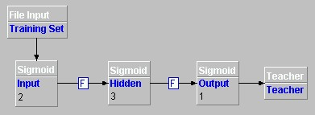
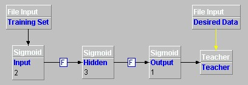
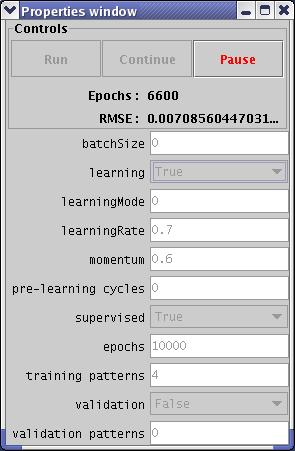

The first step in teaching a network is to have some data with which to teach it. For the xor problem, create data representing the inputs and output. Use a text editor to create a file with four rows of three semicolon-separated values:
0.0;0.0;0.0Save the file to disc, for example
0.0;1.0;1.0
1.0;0.0;1.0
1.0;1.0;0.0
c:\joone\xor.txtThe next step is to add a file input layer to the project. This will allow the data to be read by the network. After adding the file input layer, set the following parameters:
| Parameter | Value |
|---|---|
| Name | File Input |
| Advanced Column Selector | 1-2 |
| File Name | c:\joone\xor.txt |
This will read all the data from the xor.txt file, using the first two columns of data.
Connect the File Input layer to the Input layer.
To educate the network, a teacher layer is required.
Add a teacher layer to the project and configure its parameters as
follows:
| Parameter | Value |
|---|---|
| Name | Teacher |
Connect from the Output layer to the Teacher layer.

For the teacher layer to teach the network, it must have some data to use as a reference. This data is the third (Output) column of the text file created earlier.
A second file input layer is needed, reading the same file as the first, but accessing the output column.
Add a file output layer to the project and configure it as follows:
| Parameter | Value |
|---|---|
| Name | Desired Data |
| Advanced Column Selector | 3 |
| File Name | c:\joone\xor.txt |
This will read column 3 of the data for all rows.
Note that step counter parameter is automatically set to false because the other file input component is acting as the control.
Connect the file input layer by clicking on the teacher layer, and clicking and dragging a yellow line from the red square to the Desired Data layer.

The network is now prepared.
To teach the network, select Control Panel from the Tools menu. This will display the control panel.
Set epochs to 10000.
Set training patterns to 4.
Set learning rate to 0.7
Set momentum to 0.6
Set learning to TRUE.
This will teach the network with the 4 rows of data 10000 times.
Click Run and you should see the training process start. The control panel shows the cycles completed and error of the network.

The final value of the RMSE error should be very small (less than 0.1). If it is not, try selecting Tools -> Randomize to reset the network to a random state and select Tools -> Add Noise to add some random noise to the network to help it find new options.
The next tutorial, 'How to Run a Network' shows how to use this trained network to process data.